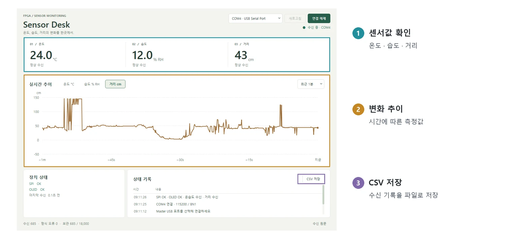

FPGA SPI Sensor Monitoring
두 Basys3 사이의 SPI 통신으로 센서 데이터를 수집하고, Master FPGA에서 검증·표시한 뒤 Qt 모니터로 추이와 상태를 기록합니다.
01. 프로젝트와 본인 역할
보드 간 SPI 규약을 정의하고 Master FPGA의 통신·프레임 검사·OLED/FND/UART 출력을 설계했습니다. Qt 모니터에서는 비동기 수신, 센서별 추이, 상태 기록과 CSV 저장을 구현했습니다.



02. 시스템 구조
저장소의 시스템 구조를 요약한 설명입니다. 각 블록은 데이터·제어 경로를 나타냅니다.
03. 핵심 설계 판단
센서 미준비와 통신 오류를 구분
100ms마다 80bit 고정 프레임을 수신하고 길이·Header·XOR·예약 Bit·유효 필드 범위를 검사합니다. 정상 프레임에서 센서값과 유효 상태를 함께 반영하며, 센서가 미준비인 정상 응답과 통신 오류를 구분합니다.
느린 출력과 SPI 수신을 분리
OLED·UART는 현재 출력용 Snapshot과 최신 대기 상태 한 개를 보관합니다. 출력 중 새 상태가 도착하면 대기 상태를 교체해 SPI 수신 경로가 출력을 기다리지 않도록 구성했습니다.
수신 중단을 표시와 기록에 반영
Master는 전송 Timeout과 500 ms 동안 정상 프레임이 없는 상태를 감지하고, Qt는 부분 수신·여러 줄 수신을 복원합니다. 오류·재연결 구간의 그래프를 분리하고 CSV는 저장을 누른 시점의 기록 Snapshot으로 내보냅니다.
04. 문제 해결 사례
- 현상
OLED 화면이 깨지고 Reset·이전 Bitstream 재적용으로도 정상 표시가 복구되지 않았습니다.
- 원인 파악
실물 패널의 128×32 해상도를 기준으로 초기화와 화면 메모리 구성을 대조했습니다.
- 수정
128×32 패널에 맞춰 초기화와 4개 Page·네 줄 화면 구성을 수정했습니다.
- 확인 결과
수정 후 정상 표시와 Reset 후 복구를 확인했습니다. 패널 규격에 맞춰 표시 경로를 정리한 사례입니다.
05. 구현 결과
공개 검증 기록에서 Master Self-checking Testbench 13개·1,447건, QtTest 36건 PASS를 확인할 수 있습니다. Master 배치배선은 내부 WNS 2.441ns·WHS 0.069ns, DRC 위반 0을 기록했습니다. 실물에서는 센서값의 SPI 수신과 OLED·FND·Qt 표시, Reset 후 복구, USB 수동 재접속과 CSV 기록을 확인했습니다.
06. 관련 자료
사진·시연·기술 근거: 프로젝트 공개 저장소. 사진은 웹 열람을 위해 크기와 형식을 조정했습니다. 외부 영상은 링크에서 직접 재생할 수 있습니다.